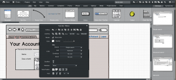
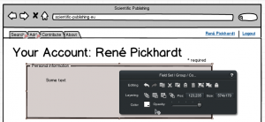

I've recently participated in a medium size software project. This project is rather fixed for a web project, so we don't suffer from rapid changes ("rapid" in terms of other web applications), but nether the less they change. The task seemed to be clear at the beginning, but bit for bit my team of developers discovered details that were not so clear. In this project I have learned that a GUI / prototype driven development can be of great benefit. I assumed this beforehand, but I didn't expect how much it helped.
So, I had the idea to create a good GUI to have something to talk about. How do you create a GUI for a web project?
HTML
- is quite simple
- I know it very well
- everything I write is obviously possible to realize
but
- the result looks too much like the resulting product. The customer might think that we already have some functional prototype
- it is also unsatisfying to print HTML pages or screenshots of rendered browser views
- although HTML is easy, arranging items on a screen might take a while
GIMP
GIMP was the next option I tried, but its disadvantage is too severe to think seriously about using it for rapid GUI prototyping: It takes ages!
A friend of mine helped me out of my misery. He told me of a product called "Balsamiq".
Balsamiq
Balsamiq is easy to use, has a lot of very intuitive features and is able to generate a linked PDF. This means, you can add links to some parts of the interface and simulate interactivity. The user should have opened the slides in full screen, so that on slide fills the screen. Then you might even think it was an web application.
Here is an example PDF created with Balsamiq
What's great about Balsamiq
Balsamiq was carefully designed, is available (and working!) on Windows 7 and Ubuntu 10.04 and via browser. The learning curve is very well. I keep finding new features as I need them. So I first intuitively found the most important ones and recognized advanced ones later.
Here are two screenshots of the GUI of the Balsamiq web service:
{kind=link}

Do you see the arrow-symbol? This looks very cool in drafts. Why doesn't GIMP provide anything similar?
{kind=link}

What I've missed
No application is perfect, so I also found some specials that Balsamiq didn't offer:
- Form elements in tables
- Adjusting table column width
I've found workarounds for both problems, but I guess there could be a better way to solve it. Nevertheless, Balsamiq is a great application that might help a lot to develop great software!